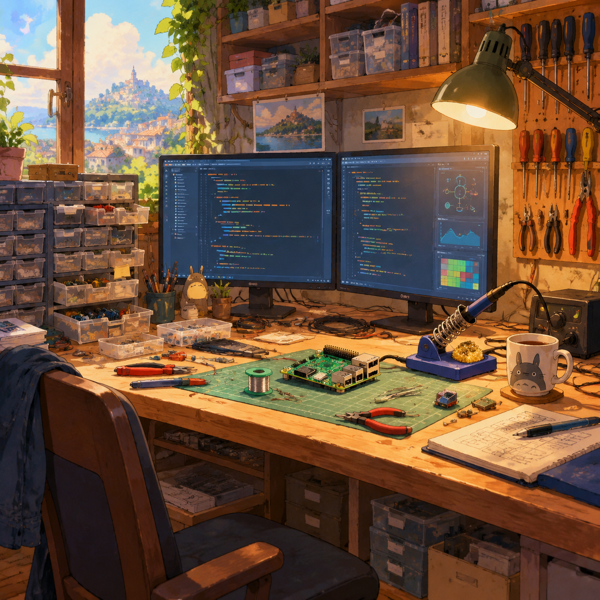

工作间
ROOM 03 · 技术作品 · stdout: 正在输出
su@shichuang:~$ ls ./projects --sort=star
su@shichuang:~$
挂在墙上的工具
su@shichuang:~$ ls ./tools --sort=常用
python
js · ts
git
linux · vim
md
…更多
（最上面挂着一把 vim，至今没人找到取下来的办法。）